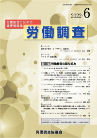
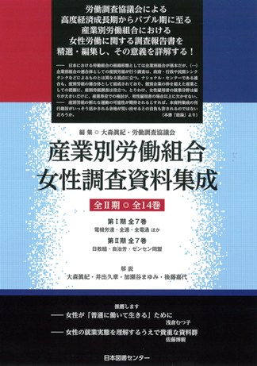

｜
What's?
｜
事業
｜
委託調査
｜
共同調査
｜
Seminor
｜
『労働調査』
｜
News
｜
Access
｜
Download
｜
Links
｜
労働調査協議会
～Labour Research Council～
労調協は労働組合の調査活動をバックアップします
Contents
労調協について
労調協の事業内容
委託調査のご案内
共同調査・研究
講演会・セミナー
月刊誌『労働調査』
最新情報
地図・連絡先
ダウンロード
リンク集
News

『労働調査』2022年6月号
を発行しました。
記事の一部をPDFファイルで公開しています。

大森眞紀・労働調査協議会編
『産業別労働組合 女性調査資料集成』
（
第Ｉ期
、
第Ⅱ期
）が
日本図書センター
より発刊されました。
WWW検索
サイト内検索